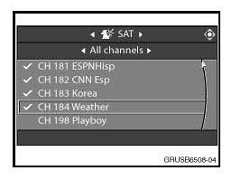
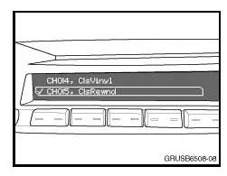
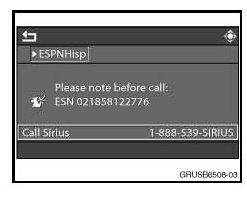

Audio System - 'Call SIRIUS' Message Displayed
SI B65 04 08Audio, Navigation, Monitors, Alarms, SRS
April 2008
Technical Service
SUBJECT
"Call SIRIUS" Is Displayed
MODEL
All vehicles with option 655 (SDARS Satellite Radio)
SITUATION
"Call SIRIUS" is displayed intermittently either only on satellite radio channel 184 even if SDARS
receiver is subscribed or on all satellite radio channels if SDARS receiver is not subscribed.
INFORMATION
"Call SIRIUS" can be displayed for a number of reasons. Shown below are typical situations where the
message is displayed, also the differences between "subscribed" and "not subscribed" displays.
1. Regardless of whether the SDARS receiver is subscribed or not, a "Call SIRIUS" message is displayed on channel 184 (Weather and 180/360 days free test-channel); see examples below.

Vehicles with a Control Display
The rolling message "To Activate Call 1-888-539-SIRIUS" is displayed for approx. 1 minute and repeats every 5 minutes.
Note:
Only audio from channel 184 is active.
Vehicles with a Radio2 (RAD2)
The rolling message "To Activate Call 1-888-539-SIRIUS" is displayed for approx. 1 minute and repeats every 5 minutes.
Note:
Only audio from channel 184 is active.
2. If the SDARS receiver is subscribed:
Vehicles with a Control Display
The SDARS receiver is subscribed:

^ Check mark next to almost all the channels (depends on the SIRIUS subscription package).
^ Audio on the checked channels.
Vehicles with a Control Display
The SDARS receiver is subscribed:
^ Details on selected SIRIUS satellite radio stations are displayed.
^ Audio on the selected channel.

Vehicles with a RAD2
The SDARS receiver is subscribed:
^ Almost all channels (depends on the SIRIUS subscription package) can be selected (only check mark next to the selected SIRIUS satellite radio station).
^ Audio on the checked channels.
Vehicles with a RAD2
The SDARS receiver is subscribed:
^ Details on selected SIRIUS satellite radio stations are displayed.
3. If the SDARS receiver is not subscribed:
Vehicles with a Control Display
The SDARS receiver is not subscribed:
^ Only a check mark next to Channel 184 (Weather and 180/360 days free test channel).
^ Audio only on channel 184.

Vehicles with a Control Display
The SDARS receiver is not subscribed:
The message "Call SIRIUS 1-888-539-SIRIUS" and the ESN number (e.g. ESN 021858122776) are displayed on all channels, except on channel 184 where the rolling message "To Activate Call 1-888- 539-SIRIUS" is displayed for approx. 1 minute and repeats every 5 minutes.
Note:
Only audio from channel 184 is active.
Vehicles with a RAD2
The SDARS receiver is not subscribed:
^ A check mark can only be set on channel 184 (Weather and 360 days free test channel).
^ Audio only on channel 184.
Vehicles with a RAD2
The SDARS receiver is not subscribed.
When selecting other SIRIUS satellite radio stations:
^ "Call SIRIUS 1-888-539-SIRIUS" is displayed.
^ The phone number and ESN number (e.g. ESN 020293527822) are displayed after scrolling up.
4. The SDARS receiver is not subscribed and the 180 days/360 days test channel has expired:
Vehicles with a Control Display
The SDARS receiver is not subscribed:
^ No check marks next to any channel.
^ No audio on any channel.
Note:
When selecting one of the listed channels, the message "Call SIRIUS 1-888-539-SIRIUS" and the ESN number (e.g. ESN 021858122776) will be displayed.
Vehicles with a RAD2
The SDARS receiver is not subscribed:
^ "Call SIRIUS 1-888-539-SIRIUS" is displayed immediately when selecting SDARS.
^ A phone number and ESN number (e.g. ESN 020293527822) are displayed after scrolling up.
^ No audio on any channel.
NOTE:
The SDARS receiver can still be activated (subscribed) after the 180/360 days free test channel has expired (no audio on channel 184 and no check mark next to channel 184).
If the SDARS receiver is unsubscribed, please contact SIRIUS to subscribe and to activate the full satellite radio functionality.
For more information on SIRIUS radio activation, log onto the website: www.sirius.com/install.
Important for proper SIRIUS radio activation:
1. Park the vehicle outside; assure a clear view to the sky, and turn channel 184 on. NOTE: Good reception to the satellites is assumed when sound is active on channel 184 and/or "Acquiring" is NOT displayed.
2. Contact SIRIUS for activating the SIRIUS Radio subscription.
3. During the subscription update, the audio will mute and "upd. subscript." is displayed. Wait until "upd. subscript." disappears and the sound output is restored.
4. Check if all channels (depending on the SIRIUS subscription package) have check marks (only on vehicles with a Control Display) next to them, and sound can be heard from the selected SIRIUS radio stations.
WARRANTY INFORMATION
Information only

Disclaimer